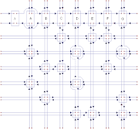
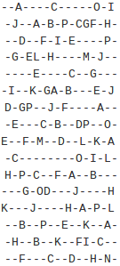
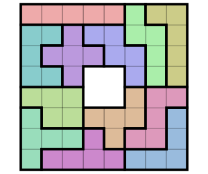

In this post, we will take a look at an algorithm to solve a NP-complete problem, the exact cover problem, and some of its applications for Sudoku solving, tiling, and the N-queens problem.
Code and school report for this post can be found here.
In mathematics, given a collection S of subsets of a set X, an exact cover is a subcollection S* of S such that each element in X is contained in exactly one subset in S*.
In computer science, the exact cover problem consists of finding a exact cover from such a collection. It is an NP-complete problem, as proved by Karp in 1972 by indirectly reducing it to the satisfiability problem.
The matrix version of the problem can be described as: for a matrix of only 0s and 1s, one has to find a subset of its rows containing exactly one 1 for each of its column. For example, the rows 0, 4 are a solution for the matrix:
| 1 | 0 | 1 | 1 |
| 0 | 1 | 1 | 0 |
| 1 | 1 | 0 | 1 |
| 1 | 0 | 0 | 1 |
| 0 | 1 | 0 | 0 |
Dancing Links are a data strucure conceived by Donald Knuth to be used in his Algorithm X, which efficiently solves the exact cover problem. In the matrix version, the dancing links data structure represents each row and each column as a circular doubly-linked list consisted exclusively of cells with 1s in the original matrix.
It is based on one simple observation: in a circular doubly-linked list, doing:
x.left.right = x.right
x.right.left = x.left
removes node x from the list, while:
x.left.right = x
x.right.left = x
restores x's position in the list, provided that x.left and x.right have been left unchanged.
This properties are indispensible when efficiently implementing the algorithm X.

The algorithm X is an efficient recursive backtracking algorithm that gets its efficiency from repeatedly removing and restoring nodes from a dancing links data structure in O(1) time.
It can be much more efficient than naïve backtracing algorithms. For example, naïve algorithms usually fail to solve Sudoku 16x16 in a reasonable time, while algothm X can do it in less than 1s in a normal modern computer.
The exact steps used when backtracking in algorithm X are, as described at Wikipedia, for a given matrix A of 1s and 0s:
If the matrix A has no columns, the current partial solution is a valid solution; terminate successfully.
Otherwise choose a column c (deterministically).
Choose a row r such that Ar, c = 1 (nondeterministically).
Include row r in the partial solution.
For each column j such that Ar, j = 1,
for each row i such that Ai, j = 1,
delete row i from matrix A.
delete column j from matrix A.
Repeat this algorithm recursively on the reduced matrix A.
In this algorithm, steps 3 and 5 can be efficiently performed because 1s are arranged in circular lists for both rows and columns.
In addition, restoring a previous state when backtracking can be done thanks to the second observation we made when looking at the dancing links data structure.
According to Computer Science theory, any NP-complete problem can be reduced to the exact cover problem, but some problems have specially intuitive reductions and are worth mentioning: Sudoku solving, Pentomino tiling, and the N-queens problem. In fact, the N-queens problem can be reduced to a slight generalization of the exact cover problem.
We will now take a closer look at Sudoku solving and pentomino tiling.
In an $N^2 \times N^2$ Sudoku, one wants to have exactly one of each number from $1$ to $N^2$ in each row, each column, and each $N\times N$ square.
When constructing the dancing links to solve a Sudoku game, for each cell $(r, c)$ in the Sudoku table and each of the possible $N^2$ numbers $k$ in that cell, we add a row. This row contains exactly $3$ 1s: the first for the column that tracks if there is a number $k$ in row $r$, the second for the column that tracks if there is a number $k$ in column $c$, and the last for the columns trat tracks if there is a number $k$ in the $N\times N$ square $N^2 \times \lfloor{\frac{r}{N^2}}\rfloor + \lfloor{\frac{c}{N^2}}\rfloor$.
We have just constructed a dancing links table with $N^2\times N^2\times N^2 = N^6$ rows and $3 \times N^2\times N^2$ columns. For usual values of $N$ ($3$, $4$, or $5$), this size is of a much smaller than order of magnitude than today's computers memory sizes. It also is worth mentioning that for recursive implementations, the call stack can be quite big, but its size won't be greater than the number of rows, so $N^6$.
When studying the time complexity, we can first see that it is exponential, considering that we test in theory every subset of rows when backtracking, so $2^{N^6}$ possibilities. Although this number is already enormous for $N=2$, we can still empirically observe that the algorithm makes correct predictions in less than a second for $N$ equal to $3$ and $4$, for most subsets are not reached in-depth search of our algorithm.
When solving a non-empty Sudoku challenge, it suffices to remove rows corresponding to pre-defined choices (for cells that already contain a number), along with columns that already contain a 1 in a removed row. Then one can directly apply algorithm X to the remaining table.
Nothing better than having a neutral online judger to test the implementation of the algorithm and its use to solve Sudoku challenges. I used this problem from Sphere Online Judger to test my implementation.
To do that, I only had to adapt the code to correctly read the input and output the results in the standard output according to the formats expected by the online judger. This adapted code can be found here and the submission results can be found here.

The pentomino tiling problem consists of finding a way to tile a board with a given set of pentominoes.

When solving this problem with a dancing links table, one adds a row for each possible action of adding a pentomino $P$ to the board in a specific position. The constraints are represented in this row as 1s in columns: the columns corresponding to the covered board cells, and the column corresponding to the pentomino $P$.
For $p$ pentominos and a two-dimensional board with $N$ cells, we have constructed a table with at most $4 * p * N$ rows (or possible actions) (considering 4 possibly distinct rotations, the $p$ pentominoes, and the possible positions of the upper left cell of the pentomino in the board) and $N + p$ columns ($N$ to ensure that each cell in the board is covered by exactly 1 pentomino, $p$ to ensure that each pentomino is used at most once).
For the most usual cases, $N$ is not greater than 300 and $p$ is no greater than $50$, and using algorithm X to this table effciently finds all possible solutions in less than a few seconds.
Dancing links can also be slightly modified, as described in Knuth's paper, to solve the generalized exact cover problem, in which some specific columns are not expected to be covered.
Some problems that can be reduced to this generalized version are: the pentomino tiling in which not all pentominoes need to be used, and the N-queens problem. Knuth also studied a few other problems in his paper.
Knuth D.E. 2000. "Dancing links" Millenial Perspectives in Computer Science.
Karp R. M. 1972. "Reducibility Among Combinatorial Problems" Complexity of Computer Computations.